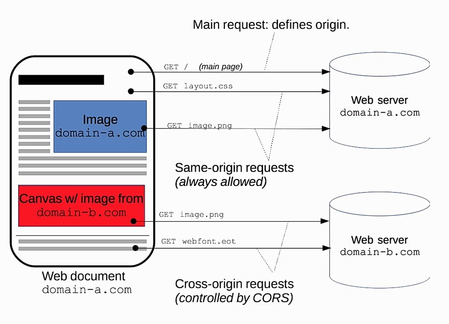

A API Fetch é uma alternativa mais simples que AJAX para a carga de recursos on-line:
fetch(URL).then(function(resp){
if(resp.ok)
return resp.json();
}).then(function(objeto){
//faz algo com esse objeto
}).catch(function(erro){
//emite alguma mensagem de erro
});Com Fetch, é possível se carregar textos, objetos JSON e arquivos binários.
.json() retorna um objeto JSON
.text() retorna um texto
.blob() retorna um objeto Blob
Um Blob geralmente é um arquivo binário (BLOB - Binary Large OBject)
var obj = URL.createObjectURL(myBlob);
myImage.src = objectURL;
Também é possível usar a API Fetch para uma requisição do tipo POST
fetch('someurl/comment', {
method: 'POST',
body: 'title=hello&message=world'
})
ou
fetch('someurl/comment', {
method: 'POST',
body: new FormData(document.getElementById('myForm'))
})Arquivos de outros domínios só podem ser acessados se o servidor aceitar requisições externas.
